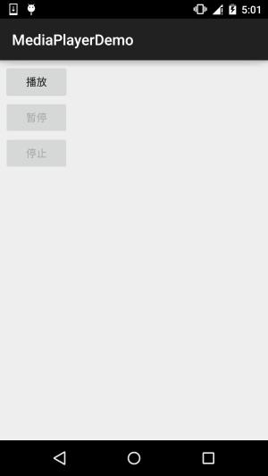

本節の導入：
本節では、Androidマルチメディアの——MediaPlayerを紹介します。このAPIを使って音声と動画を再生できます。このクラスはAndroidマルチメディアフレームワークの重要なコンポーネントであり、このクラスを通じて、最小限の手順で音声と動画を取得、デコード、再生できます。次の3つの異なるメディアソースをサポートしています：
- ローカルリソース
- 内部URI。例えば、ContentResolverを使って取得できます。
- 外部URL（ストリーム） Androidがサポートするメディアフォーマットのリストについては
Androidがサポートするメディアフォーマットのリストは、次を参照してください：Supported Media Formatsドキュメント
本節では、MediaPlayerを使って音声と動画を再生する簡単な例を作成します！
公式APIドキュメント：MediaPlayer
1.関連メソッドの詳細説明
1）MediaPlayerインスタンスを取得する：
できます直接newするまたは呼び出してcreateメソッドで作成する：
MediaPlayer mp = new MediaPlayer(); MediaPlayer mp = MediaPlayer.create(this, R.raw.test); //无需再调用setDataSource
また、createには次のような形式もあります：create(Context context, Uri uri, SurfaceHolder holder)Uriと指定されたSurfaceHolder（抽象クラス）を使用して、マルチメディアプレーヤーを作成します。
2）再生ファイルを設定する：
//①raw下的资源：
MediaPlayer.create(this, R.raw.test);
//②本地文件路径：
mp.setDataSource("/sdcard/test.mp3");
//③网络URL文件：
mp.setDataSource("http://www.xxx.com/music/test.mp3");
また、setDataSource()メソッドにはいくつかのオーバーロードがあり、その中にFileDescriptor型のパラメータがあります。このAPIを使用するときは、ファイルをresフォルダと同じ階層のassetsフォルダに置き、次のコードでDataSourceを設定する必要があります。
AssetFileDescriptor fileDescriptor = getAssets().openFd("rain.mp3");
m_mediaPlayer.setDataSource(fileDescriptor.getFileDescriptor(),fileDescriptor.getStartOffset(), fileDescriptor.getLength());
3）その他のメソッド
- getCurrentPosition()：現在の再生位置を取得する
- getDuration()：ファイルの時間を取得する
- getVideoHeight()：ビデオの高さを取得する
- getVideoWidth()：ビデオの幅を取得する
- isLooping()：ループ再生するかどうか
- isPlaying()：再生中かどうか
- pause()：一時停止
- prepare()：準備（同期）
- prepareAsync()：準備（非同期）
- release()：MediaPlayerオブジェクトを解放する
- reset()：MediaPlayerオブジェクトをリセットする
- seekTo(int msec)：再生位置を指定する（ミリ秒単位の時間）
- setAudioStreamType(int streamtype)：ストリーミングメディアのタイプを指定する
- setDisplay(SurfaceHolder sh)：SurfaceHolderを使用してマルチメディアを表示するように設定する
- setLooping(boolean looping)：ループ再生するかどうかを設定する
- setOnBufferingUpdateListener(MediaPlayer.OnBufferingUpdateListener listener)： ネットワークストリーミングメディアのバッファリングリスナー
- setOnCompletionListener(MediaPlayer.OnCompletionListener listener)：ネットワークストリーミングメディアの再生終了リスナー
- setOnErrorListener(MediaPlayer.OnErrorListener listener)： エラー情報のリスナーを設定する
- setOnVideoSizeChangedListener(MediaPlayer.OnVideoSizeChangedListener listener)： ビデオサイズのリスナー
- setScreenOnWhilePlaying(boolean screenOn)：SurfaceHolderを使用して表示するかどうかを設定する
- setVolume(float leftVolume, float rightVolume)：音量を設定する
- start()：再生を開始する
- stop()：再生を停止する
2.コード例
サンプル1：MediaPlayerを使用して音声を再生する：
実行結果図：

重要なコード：
public class MainActivity extends AppCompatActivity implements View.OnClickListener{
private Button btn_play;
private Button btn_pause;
private Button btn_stop;
private MediaPlayer mPlayer = null;
private boolean isRelease = true; //判断是否MediaPlayer是否释放的标志
@Override
protected void onCreate(Bundle savedInstanceState) {
super.onCreate(savedInstanceState);
setContentView(R.layout.activity_main);
bindViews();
}
private void bindViews() {
btn_play = (Button) findViewById(R.id.btn_play);
btn_pause = (Button) findViewById(R.id.btn_pause);
btn_stop = (Button) findViewById(R.id.btn_stop);
btn_play.setOnClickListener(this);
btn_pause.setOnClickListener(this);
btn_stop.setOnClickListener(this);
}
@Override
public void onClick(View v) {
switch (v.getId()){
case R.id.btn_play:
if(isRelease){
mPlayer = MediaPlayer.create(this,R.raw.fly);
isRelease = false;
}
mPlayer.start(); //开始播放
btn_play.setEnabled(false);
btn_pause.setEnabled(true);
btn_stop.setEnabled(true);
break;
case R.id.btn_pause:
mPlayer.pause(); //停止播放
btn_play.setEnabled(true);
btn_pause.setEnabled(false);
btn_stop.setEnabled(false);
break;
case R.id.btn_stop:
mPlayer.reset(); //重置MediaPlayer
mPlayer.release(); //释放MediaPlayer
isRelease = true;
btn_play.setEnabled(true);
btn_pause.setEnabled(false);
btn_stop.setEnabled(false);
break;
}
}
}
注意事項：
再生するのはres/rawディレクトリ内の音声ファイルです。MediaPlayerの作成にはcreateメソッドを呼び出しており、最初の再生開始前にprepare()を再度呼び出す必要はありません。コンストラクタで生成した場合は、prepare()メソッドを1回呼び出す必要があります。 また、公式ドキュメントにある、他の2つの方法で音声を再生するサンプルコードを貼っておきます:
ローカルUri：
Uri myUri = ....; // initialize Uri here MediaPlayer mediaPlayer = new MediaPlayer(); mediaPlayer.setAudioStreamType(AudioManager.STREAM_MUSIC); mediaPlayer.setDataSource(getApplicationContext(), myUri); mediaPlayer.prepare(); mediaPlayer.start();
外部URL：
String url = "http://........"; // your URL here MediaPlayer mediaPlayer = new MediaPlayer(); mediaPlayer.setAudioStreamType(AudioManager.STREAM_MUSIC); mediaPlayer.setDataSource(url); mediaPlayer.prepare(); // might take long! (for buffering, etc) mediaPlayer.start();
Note：URLを介してストリーム形式でオンライン音声ファイルを再生する場合、そのファイルは プログレッシブダウンロードが可能でなければなりません。
サンプル2：MediaPlayerを使用して動画を再生する
MediaPlayerは主に音声の再生に使用され、画像出力インターフェースを提供していないため、MediaPlayerが再生する画像出力を表示するには、他のコンポーネントを利用する必要があります。使用できるのはSurfaceView表示に使用します。以下ではSurfaceViewを使ってビデオ再生の例を作成します：
実行結果図：

実装コード：
レイアウトファイル：activity_main.xml
<LinearLayout xmlns:android="http://schemas.android.com/apk/res/android"
android:layout_width="match_parent"
android:layout_height="match_parent"
android:orientation="vertical"
android:padding="5dp">
<SurfaceView
android:id="@+id/sfv_show"
android:layout_width="match_parent"
android:layout_height="300dp" />
<Button
android:id="@+id/btn_start"
android:layout_width="wrap_content"
android:layout_height="wrap_content"
android:text="开始" />
<Button
android:id="@+id/btn_pause"
android:layout_width="wrap_content"
android:layout_height="wrap_content"
android:text="暂停 " />
<Button
android:id="@+id/btn_stop"
android:layout_width="wrap_content"
android:layout_height="wrap_content"
android:text="终止" />
</LinearLayout>
MainActivity.java：
public class MainActivity extends AppCompatActivity implements View.OnClickListener, SurfaceHolder.Callback {
private MediaPlayer mPlayer = null;
private SurfaceView sfv_show;
private SurfaceHolder surfaceHolder;
private Button btn_start;
private Button btn_pause;
private Button btn_stop;
@Override
protected void onCreate(Bundle savedInstanceState) {
super.onCreate(savedInstanceState);
setContentView(R.layout.activity_main);
bindViews();
}
private void bindViews() {
sfv_show = (SurfaceView) findViewById(R.id.sfv_show);
btn_start = (Button) findViewById(R.id.btn_start);
btn_pause = (Button) findViewById(R.id.btn_pause);
btn_stop = (Button) findViewById(R.id.btn_stop);
btn_start.setOnClickListener(this);
btn_pause.setOnClickListener(this);
btn_stop.setOnClickListener(this);
//初始化SurfaceHolder类，SurfaceView的控制器
surfaceHolder = sfv_show.getHolder();
surfaceHolder.addCallback(this);
surfaceHolder.setFixedSize(320, 220); //显示的分辨率,不设置为视频默认
}
@Override
public void onClick(View v) {
switch (v.getId()) {
case R.id.btn_start:
mPlayer.start();
break;
case R.id.btn_pause:
mPlayer.pause();
break;
case R.id.btn_stop:
mPlayer.stop();
break;
}
}
@Override
public void surfaceCreated(SurfaceHolder holder) {
mPlayer = MediaPlayer.create(MainActivity.this, R.raw.lesson);
mPlayer.setAudioStreamType(AudioManager.STREAM_MUSIC);
mPlayer.setDisplay(surfaceHolder); //设置显示视频显示在SurfaceView上
}
@Override
public void surfaceChanged(SurfaceHolder holder, int format, int width, int height) {}
@Override
public void surfaceDestroyed(SurfaceHolder holder) {}
@Override
protected void onDestroy() {
super.onDestroy();
if (mPlayer.isPlaying()) {
mPlayer.stop();
}
mPlayer.release();
}
}
コードはとても簡単です。レイアウトにSurfaceViewがあり、getHolderを呼び出してSurfaceHolderオブジェクトを取得します。ここでSurfaceViewに関連する設定を行い、表示解像度とCallbackインターフェースを設定し、SurfaceViewが作成されたとき、変更されたとき、破棄されたときの3つのメソッドをオーバーライドします！そしてボタンで再生と一時停止を制御するだけです~
サンプル3：VideoViewを使用した動画再生
MediaPlayer + SurfaceViewで動画を再生する方法のほかに、VideoViewを使って直接動画を再生することもできます。少し変更するだけで動画再生を実現できます！実行結果は上記と同じなので、貼り付けずに、直接コードを載せます！
MainActivity.java：
public class MainActivity extends AppCompatActivity implements View.OnClickListener {
private VideoView videoView;
private Button btn_start;
private Button btn_pause;
private Button btn_stop;
@Override
protected void onCreate(Bundle savedInstanceState) {
super.onCreate(savedInstanceState);
setContentView(R.layout.activity_main);
bindViews();
}
private void bindViews() {
videoView = (VideoView) findViewById(R.id.videoView);
btn_start = (Button) findViewById(R.id.btn_start);
btn_pause = (Button) findViewById(R.id.btn_pause);
btn_stop = (Button) findViewById(R.id.btn_stop);
btn_start.setOnClickListener(this);
btn_pause.setOnClickListener(this);
btn_stop.setOnClickListener(this);
//根据文件路径播放
if (Environment.getExternalStorageState().equals(Environment.MEDIA_MOUNTED)) {
videoView.setVideoPath(Environment.getExternalStorageDirectory() + "/lesson.mp4");
}
//读取放在raw目录下的文件
//videoView.setVideoURI(Uri.parse("android.resource://com.jay.videoviewdemo/" + R.raw.lesson));
videoView.setMediaController(new MediaController(this));
}
@Override
public void onClick(View v) {
switch (v.getId()) {
case R.id.btn_start:
videoView.start();
break;
case R.id.btn_pause:
videoView.pause();
break;
case R.id.btn_stop:
videoView.stopPlayback();
break;
}
}
}
コードは非常に簡単なので、説明は省きます~疑問があれば、自分でDemoをダウンロードして実行してみてください~
3.本節のサンプルコードのダウンロード：
本節のまとめ：
はい、本節ではMediaPlayerを使った音声再生と、SurfaceViewと組み合わせた動画再生について簡単に紹介し、最後にVideoViewを使った動画再生の例も紹介しました。どれも非常に簡単な使い方です~皆さんにとって学習は非常に簡単だと思います~では、ありがとうございました~